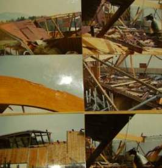

1: Einführung 2. Moderne Dachkonstruktion - der todsichere Hit? 3: Schiefer + Tonziegel 4: Betondachstein 5: Ziegelnovitäten 6: Blechdach 7: Flachdach 8: Dachausbau 9: Reet/Stroh + Holzschindel / Links
 München TV Pressetalk 20:00 "Einstürzende Flachbauten"
München TV Pressetalk 20:00 "Einstürzende Flachbauten"Inhalt des Unterkapitels 12.2:
2.1.1 Einsturzchronologie und kritische Kommentare zu Ursachen,
Konstruktions- und Materialproblemen 1284-1989
2.1.2 Einsturzchronologie - die wirklich krassen Fälle!!! - und kritische Kommentare zu nicht allgemein bekannten Ursachen,
Konstruktions- und Materialproblemen 1990 ff. - inkl. Bad Reichenhall
2.2 Wie geht es nun weiter? Worauf es wirklich ankommt für mehr Sicherheit unter Risikodächern: Tips und Tricks zur raffinierten
Instandsetzung und zielgenauen Inspektion
3. Weiterführende Dachlinks
4. Hinweis für besorgte Dachbesitzer
Hinweis: Wer weitere Fotos zu hier erwähnten Einstürzen zur Verfügung stellen kann, möge die bitte nach telefonischer Rücksprache 09574-3011/0170-7351557 an mich mailen.
2.1.1 Einsturzchronologie und Kommentare 1284-1989.
2.1.1.1 1284-1980er
Am 29.11.1284 stürzt das mit 48,20 Meter alle anderen Gewölbehöhen der Gotik übertreffende Chorgewölbe der jüngst fertiggestellten (1225-1272)
Kathedrale von Beauvais ein. Der revolutionäre Bauplan muß geändert werden, das Chorgewölbe in verbesserter Ausführung - eine verdoppelte Pfeilerzahl halbiert
die Jochspannweiten - unverzüglich rekonstruiert. Man läßt auch sonst nicht locker und erbaut einen 150 Meter hohen Kirchturm, der dann ausgerechnet am
Himmelfahrtstag 1574 einstürzt, von den kritischen Zeitgenossen als Gottesstrafe wegen "babylonischer" Gesinnung der Bauleute verstanden. Falsch?
Infolink1
Infolink2
Infolink3
Ja, das waren noch Zeiten damals, und wer nicht aufpaßte bei seinem Bauwerken, fand sich doch relativ schnell im Kerker oder gar unter dem Henkersbeil wider.
Heute dauern Pfuschprozesse meist ewig und schließen dann mit einem schwachsinnigen Vergleich. Wunderbar für die Rechtgelehrten namens Advokaten/Rechtsanwälte
(die dabei dollest verdienen), die Richter (die sich die Mühsal des Urteilschreibens frech ersparen) und vor allem all die bekannten
und unbekannten Schwachverständigen und Schlechtachter, die ihr böses Leben mit einstudierter Ahnungslosigkeit auf Kosten der Wahrheit und der Justizopfer
frönen und außer dem Herabbeten von Normen, die von der Industrie absichtsvoll, aber nicht unbedingt zugunsten des Verbrauchers, zurechtgeschneidert und
zuurechtgeschustert werden, wenig bis garnix auf der fachlichen, geschweige denn menschlichen Pfanne haben und vielleicht gerade deswegen von den Richtern
als Maßstab aller Dinge mißbraucht oder zumindest benutzt werden. Wie bequem! Ach ja, es gibt freilich bemerkenswerte Ausnahmen
und einer möchte ich, da leider schon länger verstorben, ehrend gedenken:
Senator Dipl.-Ing. Architekt Raimund Probst. Der Stachel im Fleisch der Schwachverständigenindustrie
und Erfinder der Rottacher Bautagungen. Vielen alten Hasen noch ein Begriff, wer weiß schon, wie lange noch?
2.1.1.2 1980er
Da wir die millionenfachen vorsätzlichen Dacheinstürze und Einsturzopfer der uns als rechtens, allzurechtens verkauften angloamerikanischen Massenmorde im Bombenhagel des WK II, früher mal ein Verbrechen gegen die Menschlichkeit, das Völkerrecht und Kriegsrecht, überspringen müssen (Vorsicht, vielleicht auch schon ein hierzulande strafbares Meinungsverbrechen, bitte nicht verraten!), geht es hier erst ab den 1980ern weiter. Auch die "modernen" Konstruktionsmethoden des Daches bieten zumindest dem Laien niederschmetternde, wenn nicht gar bestürzende Ergebnisse. Nicht nur im Stahlbetonbau, sondern auch bei vielen anderen Konstruktionsweisen und Baustoffsystemen, über die Sie hier Material- und Hintergrundwissen, Details und Kritik geliefert bekommen:
In den 1980er Jahren stürzt in den Ferien die Flachdachdecke der Sporthalle der Goetheschule in Limburg ein. Wassermassen auf dem Dach infolge eines verstopften Abflußrohres waren der Auslöser.
Am 21.5.1980 stürzt ausgerechnet während einer Konferenz des Rings Deutscher Makler das Stahlbetondach der 1956/57 erbauten Kongreßhalle in Berlin ("Schwangere Auster", neben der Betonmenschenkäfigmoderne und dem Hamburgertempel auch eines der Danaergeschenke der USA, Arch. Hugh Stubbins) ein. Ein Toter - ein Journalist des Senders "Freies" Berlin. Einsturzgrund: Materialkorrosion, Baupfusch, keine Ahnung des Architekten und Statikers vom Beton und seiner Materialheimtücke), mangelhafte Gebäudeinspektion und -wartung. Wiederaufbau 1987. Arch. Stubbins stirbt 2006, die SZ berichtet am 15.7.06 unter "Die tödliche Auster", daß die Kongreßhalle "Modernität illustrieren" und als "Botschafter des aufgeklärten Kapitalismus" dienen sollte, das spektakuläre Dach wäre von Stubbins als "Dach des großen Versprechens" bezeichnet worden. Infolink Materialermüdung und Kongreßhalle Infolink wikipedia Kongreßhalle1984 stellt ein Gutachter an der 1977 erbauten Gogenkroghalle in Neustadt bei Lübeck fest, daß sich die Dachkonstruktion aus Leimbindern gesenkt hat. Ungenügende Verleimung wird als Ursache genannt, die Binder werden durch aufgeschraubte Metallplatten wieder ertüchtigt.

1987, ein Jahr nach Erbauung (!), stürzt in Stritzling bei Deggendorf die hier abgebildete Leimbinderhalle (Fotos: Bauer) ein. Es sollen Leimschäden gewesen sein, die Halle wird in Anspruchnahme der Gewährleistung wieder neu erbaut. Übrigens nur ca. 10 Kilometer entfernt von Bernried, wo 2006 die Halle gleicher Bauart der gleichen Firma des Reiterhofes Bauer einstürzt (siehe dort).Hier weiter in den Hauptkapiteln Dach: 3: Schiefer + Tonziegel
Und hier finden Sie weitere Info und Tipps zu Dachdecker, Dachziegel, Dachdämmung, Dachausbau, Dachstuhl, ...